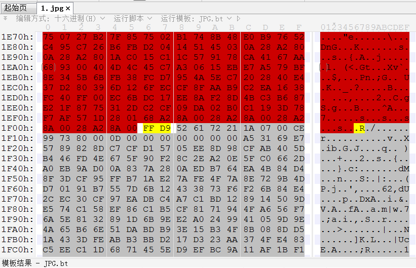

151 jpg
下载得到无后缀名文件，十六进制编辑器查看文件头，确认是jpg图片。同时尾部发现文件尾FF D9后还有内容。

52 61 72 21是RAR压缩包的文件头，将其提取，得到一个加密压缩包。常用密码爆破一下，发现密码是123456。解压得到名为ZmxhZy5jb2Rl的文件。

文件名显然是base64编码，解密得到flag.code。以文本文件形式打开，内容也是base64编码。
ZTk1NjAyMDAwMDU1OGJlYzYwOGI3NTA4OGI3ZDEwOGI0NTBjZmY3MDBjOGY4N2I0MDAwMDAwZmY3MDA4OGY4N2I4MDAwMDAwNTA4Zjg3YzQwMDAwMDA2MWI4MDAwMDAwMDBjOWMyMTAwMDU1OGJlYzgzYzRmYzYwYzc0NWZjMDAwMDAwMDBlODAwMDAwMDAwNWI4MWViOTAxMDQwMDA1NThkODNkNTEwNDAwMDUwOGQ4MzRkMTA0MDAwNTA2NGZmMzUwMDAwMDAwMDY0ODkyNTAwMDAwMDAwOGI3ZDA4ODFlNzAwMDBmZmZmNjY4MTNmNGQ1YTc1MTE4YmY3MDM3NjNjNjY4MTNlNTA0NTc1MDU4OTdkZmNlYjEwODFlZjAwMDAwMTAwODFmZjAwMDAwMDcwNzIwMmViZDg2NDhmMDUwMDAwMDAwMDgzYzQwYzYxOGI0NWZjYzljMjA0MDA1NThiZWM4M2M0Zjg2MGM3NDVmYzAwMDAwMDAwZTgwMDAwMDAwMDViODFlYjBhMTE0MDAwNTU4ZDgzOTgxMTQwMDA1MDhkODM0ZDEwNDAwMDUwNjRmZjM1MDAwMDAwMDA2NDg5MjUwMDAwMDAwMDhiN2QwY2I5ZmZmZmZmZmYzMmMwZmNmMmFlOGJjZjJiNGQwYzg5NGRmODhiNzUwODAzNzYzYzhiNzY3ODAzNzUwODhiNWUyMDAzNWQwODMzZDI1NjhiM2IwMzdkMDg4Yjc1MGM4YjRkZjhmM2E2NzUwMzVlZWIwYzVlODNjMzA0NDIzYjU2MTg3MmUzZWIyMjJiNWUyMDJiNWQwOGQxZWIwMzVlMjQwMzVkMDgwZmI3MDNjMWUwMDIwMzQ2MWMwMzQ1MDg4YjAwMDM0NTA4ODk0NWZjNjQ4ZjA1MDAwMDAwMDA4M2M0MGM2MThiNDVmY2M5YzIwODAwMDAwMDAwMDAwMDAwMDAwMDAwMDAwMDAwMDAwMDAwMDAwMDAwMDAwMDQzNWU0NzQ0MDAwNjE5NjM1ZjUyMTc1MzUyNTQ1ODUzNTIxNzUxNDI1OTU0NDM1ZTU4NTkxNjNkMDUxOTQwNTg0NTUzMGQxMDUxNWI1NjUwMTAwMDdiNTg1NjUzN2I1ZTU1NDU1NjQ1NGU3NjAwNzA1MjQzNjc0NTU4NTQ3NjUzNTM0NTUyNDQ0NDAwNDI0NDUyNDUwNDA1MDA3YTUyNDQ0NDU2NTA1Mjc1NTg0Zjc2MDA1MDU4NTg1MzE3N2Q1ODU1MTYwMDdmNTY1ZjU2MDA3NDU2NTkxNzRlNTg0MjE3NTE1ZTU5NTMxNzQzNWY1MjE3NTE1NjViNTAwODAwNjhiZTExNDAwMGU4NDEwMDAwMDA2OGMzMTE0MDAwZTgzNzAwMDAwMDhkOGJjMzExNDAwMDhkODNiZTExNDAwMDZhMDA1MDUxNmEwMGZmOTNiYTExNDAwMGMzNTE1YjU2NTAwYTU4NDU0ZDY4NDI2ODcwNTI0MzY4NjM1ZjUyMTk3NDA3NzMwNDY4NzEwNjc3MGUzNzAwOGI0NDI0MDQwM2MzNTE4YTA4ZWIwODgwZjEzNzg4MDg0MDhhMDgwYWM5NzVmNDU5YzIwNDAwZTgwMDAwMDAwMDViODFlYmE4MTI0MDAwNjhlODExNDAwMGU4Y2ZmZmZmZmY2OGY1MTE0MDAwZThjNWZmZmZmZjY4MGIxMjQwMDBlOGJiZmZmZmZmNjgwNDEyNDAwMGU4YjFmZmZmZmZmZjM0MjRlODllZmRmZmZmMGJjMDc1MDVlOWE0MDAwMDAwODk4M2FhMTE0MDAwOGQ4M2Y1MTE0MDAwNTBmZmIzYWExMTQwMDBlOGY3ZmRmZmZmMGJjMDc1MDVlOTgzMDAwMDAwODk4M2IyMTE0MDAwOGQ4M2U4MTE0MDAwNTBmZmIzYWExMTQwMDBmZjkzYjIxMTQwMDA4OTgzYjYxMTQwMDA4ZDgzMDQxMjQwMDA1MGZmOTNiNjExNDAwMDg5ODNhZTExNDAwMDhkODMwYjEyNDAwMDUwZmZiM2FlMTE0MDAwZmY5M2IyMTE0MDAwODk4M2JhMTE0MDAwNjgyMTEyNDAwMGU4MmFmZmZmZmY2ODI2MTI0MDAwZTgyMGZmZmZmZjhkOGIyNjEyNDAwMDhkODMyMTEyNDAwMDZhMjQ1MDUxNmEwMGZmOTNiYTExNDAwMDgzZjgwNjc1MDFjM2U4YjJmZWZmZmZjM2U5ZjQ0YWY1ZmY=
解密得到大量十六进制编码。
e956020000558bec608b75088b7d108b450cff700c8f87b4000000ff70088f87b8000000508f87c400000061b800000000c9c21000558bec83c4fc60c745fc00000000e8000000005b81eb90104000558d83d5104000508d834d1040005064ff3500000000648925000000008b7d0881e70000ffff66813f4d5a75118bf703763c66813e50457505897dfceb1081ef0000010081ff000000707202ebd8648f050000000083c40c618b45fcc9c20400558bec83c4f860c745fc00000000e8000000005b81eb0a114000558d8398114000508d834d1040005064ff3500000000648925000000008b7d0cb9ffffffff32c0fcf2ae8bcf2b4d0c894df88b750803763c8b76780375088b5e20035d0833d2568b3b037d088b750c8b4df8f3a675035eeb0c5e83c304423b561872e3eb222b5e202b5d08d1eb035e24035d080fb703c1e00203461c0345088b000345088945fc648f050000000083c40c618b45fcc9c208000000000000000000000000000000000000000000435e4744000619635f52175352545853521751425954435e5859163d0519405845530d10515b565010007b5856537b5e554556454e7600705243674558547653534552444400424452450405007a52444456505275584f760050585853177d585516007f565f5600745659174e584217515e595317435f521751565b50080068be114000e84100000068c3114000e8370000008d8bc31140008d83be1140006a0050516a00ff93ba114000c3515b56500a58454d68426870524368635f521974077304687106770e37008b44240403c3518a08eb0880f1378808408a080ac975f459c20400e8000000005b81eba812400068e8114000e8cfffffff68f5114000e8c5ffffff680b124000e8bbffffff6804124000e8b1ffffffff3424e89efdffff0bc07505e9a40000008983aa1140008d83f511400050ffb3aa114000e8f7fdffff0bc07505e9830000008983b21140008d83e811400050ffb3aa114000ff93b21140008983b61140008d830412400050ff93b61140008983ae1140008d830b12400050ffb3ae114000ff93b21140008983ba1140006821124000e82affffff6826124000e820ffffff8d8b261240008d83211240006a2450516a00ff93ba11400083f8067501c3e8b2feffffc3e9f44af5ff
将其在十六进制编辑器下保存成二进制文件，用Linux的file命令判断文件类型。
root@kali:~/Desktop# file 1
1: DOS executable (COM)
说明很可能是一段可执行代码。但如果按com格式可执行文件逆向是无法得到结果的，这实际上是一段32位的二进制代码（感谢@pcs师傅指导）。用IDA打开，选择Binary File：

选择32-bit mode：

注意到从第162字节（也就是大量的00部分）开始就不被识别为命令，而是数据：

且这些数据被00字节分隔成可打印字符组成的字符串，可能是某种加密处理过的文字信息：

理论上这里是可以通过前半部分的代码识别出加密方法的，但暂时没有看懂，待后续补充。
先从另一个角度尝试，用strings命令输出所有可打印字符串：
root@kali:~/Desktop# strings 1
?MZu
>PEu
"+^ +]
C^GD
SRTXSR
QBYTC^XY
@XES
Q[VP
{XVS{^UEVENv
pRCgEXTvSSERDD
BDRE
zRDDVPRuXOv
PXXS
Q^YS
QV[P
Q[VP
XEMhBhpRChc_R
j$PQj
注意到出现两次的Q[VP以及非常相似的QV[P，猜测这应该是由同一个单词（及其字母顺序调整后的字符串）通过单字符对单字符的加密得到的。首先尝试异或加密，爆破其密钥：
import string
s = 'Q[VP'
for i in range(256):
r = ''
for j in s:
a = chr(ord(j) ^ i)
if a in string.printable:
r += a
if len(r) == 4:
print(i, r)
注意到输出结果中的下述行：
55 flag
尝试将整段二进制代码与密钥55进行按位异或运算：
b = open('C:/Users/Administrator/Desktop/1', 'rb').read()
for i in b:
print(chr(i ^ 55), end = '')
输出结果：
Þa577b¼ÛW¼B?¼J'¼r;ÈG;¸°777ÈG?¸°777g¸°ó777V7777þõ'7b¼Û´óËWðrË7777ß7777l¶Ü§'w7bº´â'w7gº´z'w7gSÈ7777S¾7777¼J?¶Ð77ÈÈQzmB&¼À4AQ¶ grB2¾JËÜ'¶Ø7767¶È777GE5ÜïS¸27777´ó;V¼rËþõ37b¼Û´óÏWðrË7777ß7777l¶Ü=&w7bº´¯&w7gº´z'w7gSÈ7777S¾7777¼J;ÈÈÈÈ÷Ëżøz;¾zϼB?4A¼AO4B?¼i4j?åa¼4J?¼B;¼zÏÄB4iÜ;i´ô3ua/EÔÜij?æÜ4i4j?84ö×54q+4r?¼74r?¾rËS¸27777´ó;V¼rËþõ?777777777777777777777tips71.The decode function!
2.word:'flag'7LoadLibraryA7GetProcAddress7user327MessageBoxA7good Job!7Haha7Can you find the falg?7_&w7ßv777_ô&w7ß 777º¼ô&w7º´&w7]7gf]7Ȥ&w7ôflag=orz_u_Get_The.C0D3_F1@9 7¼s34ôf½?Ü?·Æ ¿?w½?=þBÃnõ37ß7777l¶Ü%w7_ß&w7ßøÈÈÈ_Â&w7ßòÈÈÈ_<%w7ßÈÈÈ_3%w7ßÈÈÈÈß©ÊÈÈ<÷B2Þ777¾´&w7º´Â&w7gÈ&w7ßÀÊÈÈ<÷B2Þ´777¾´&w7º´ß&w7gÈ&w7Ȥ&w7¾´&w7º´3%w7gȤ&w7¾´&w7º´<%w7gÈ&w7Ȥ&w7¾´&w7_%w7ßÈÈÈ_%w7ßÈÈȺ¼%w7º´%w7]gf]7Ȥ&w7´Ï1B6ôßÉÈÈôÞÃ}ÂÈ
得到了大量有意义的字符串，其中起分隔作用的7实际上是原始二进制数据中的00字节与55异或的结果。从而得到flag。
更新：使用适当版本的IDA确实可以得到可识别的伪代码，其中能够明显看到异或0x37的操作：

flag：RCTF{orz_u_Get_The.C0D3_F1@9}
152 memory_forensics1
跟144题是一样的，包括附件和flag。
flag：CISCN{5dd47ce8c7d541739db27168c0ca5620}